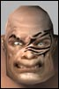

| Author | Thread |
Netsuke
Leet
 | Best "Fun Factor" not "Uber" class? I want to start a "fun" class. Not necessarily an "uber" one, just one that is fun to play, solo or in a group.
What is your favorite "fun factor" class and why? |
Qaetus
Supa Leet
 | Crat! There are very few of us on RK-1(3.9%). We aren't that well known, but it sure is fun to charm two little minions and make them /disco and prostrate.  We're also able to solo very well and can calm/root/snare/fear and we have xp buffs. 
PS. Crat suits look snazzy too. 
~Q~ |
Sbje
Supa Leet | Always though crat looked fun  having fun with a trader aswell |
Revelator
Supa Leet
 | Adv!!! Adventurer! We can morph and heal and dual wield pistols and charm leets and calm non-aggro mobs. Oh and buff perception a truly astound amount.
You can be a leet, a parrot, a ghastly 2-headed dog, a sabretoothed tiger or a HUGE dragon!
And we are not uber at all! In any way! At all! |
Spizmack
Phear Leet
 | Fixer is a blast to play as well.
Feel the S P E E D |
Cronos
Supa Leet
 | Lets say I have tried every profession in AO...
I wanted to cancel at some point,
But then I played my fixer alt for a while and realized
(Hey! This is fun!) |
locomdenom
Supa Leet
 | I've played a fixer to 150.
I've also played alt crats, traders, MP... none of them really appealed to me.
So I'm thinking maybe I don't like combat-caster types, and I'm gonna give an enforcer a try.
But think about how you like to play, and play a class that goes with that. |
Fenris
Supa Leet
 |  Hmm I think that you should think of it in terms of simplicity. Enforcer by far is the easiest. Very few nanos to wory about. Mostly you find kobold, smash kobold with stick. Occasionally you will find a need to cast a nano but for the most part you are just the hired muscle. I think on the far end of the complexity scale you would have the agent who has so many possibilities that it would take nearly a lifetime to begin to exploit them all. If I were going to rank from most simple to most difficult it would be something like this
Enforcer
Fixer
Martial Artist
Soldier
Adventurer
Nano Technician
Meta Physicist
Bureaucrat
Trader
Engineer
Doctor
Agent
My ranking would be based on the reliance on nano programs and the difficulty in getting them. For instance the Engineer requires a trader or (sometimes AND!!!) an MP for buffs to run his high level nanos. A doctor has to pay mad attention during combat and try not to end up looking up daisy skirts. Trader is complicated because of the way they have to run all their nano programs however in pvp they are unquestionably the most powerful profession and PvM aren't bad either. The MP has pets Direct damage nukes and lots of buffs to keep them powerful. The Bureaucrat relies on the MP to live up to his full potential but really has it better than the poor engies. The Crat has direct damage nukes, pets, debuffs, buffs, and can carry a gun without gimping himself too badly. Crats really are a fun profession. The MA falls in about the same category as the Enforcer but MA's rely a little more heavily on nanos. Advent is a fun class with morphs and all, but don't expect them to be uber. On the uberness scale they rank above engies. The fixer is my own personal favorite because we are fast, we have style, aren't too bad at doing damage, and well we just rock your lame ass. The soldier is like a more powerful fixer that doesn't dodge bullets but spews more of them out. and the nano technician? Hmm what to say about them. Nano tech is all direct damage and debuffs. You can put on guns but since nanobots are your ammo dont expect to get rich in combat. The same applies to Docs MP's and Traders and engies. Play each profession to 30 and see what you think. If you like going hellbent for leather without worrying about a lot of things go with something towards the top. If intricacy is what make things interesting for you then pick from the bottom. Keep in mind that I have not played all of the professions and my opinion may be wrong but maybe it will point you in the right direction. |
Insida
Supa Leet
 | fixer is really fun |
Snuble
I, Leet
 | quote:
On the uberness scale they rank above engies.
Depends on what game you want to play... If your exploring and doing PvM, your pretty near the top of all classes. PvP might be like the quote, but it depends much on the player behind the keyboard... |
Revelator
Supa Leet
| FUN not uber Netsuke wanted a fun class, not an uber. Fixers are fun, or so I hear, but then there is that whole GA obsession thing, plus people bugging you for Run n HoT n NCU ALL the time.
Enfs are simply uber, and although they are simple to play in a way, they also bear a lot of responsibility. They simply HAVE to be uber, or they let everyone down.
I'd say Crat for fun, nobody bugs you for buffs, you get a lot of symphaty from the masses, nobody expects anything but an XP bonus and mezzing from you in a team, and it isn't inconceivable that they will get some love in the near future, making them slightly less rare. Much respect to anyone with a Crat main!
If not Crat then Adv, that is my main, can do a bit of everything, and fairly self reliant, very fun to play IMHO. |
Cronos
Supa Leet
| Another suggestion is to not play a pet class for fun. Pet pathing will make you miserable, even if the pet is dark red it wont matter if he cant navigate. |
Jerrak
Supa Leet
 | advents are really really fun, as are crats. Ive heard that MPs are fun, if you play them to have fun, and not to be uber. I love enfs, and i think traders are pretty cool too. Id have to say ADV for fun factor, just because of 2nd best healing in game, morphs, run speed buffs and they're just all around fun. |
Kasimir
Supa Leet
 | Fixers are the best!
Get any three of us in a room and there's a party! |
Vixentrox
WTB Nevver in 25%
 | Any class is fun with RP! |
Specialone
Supa Leet
 | fixers and crats
most fun, and totally different in an opposite side of the AO spectrum kind of way |
Kasimir
Supa Leet
| quote:
Originally posted by Specialone
fixers and crats
most fun, and totally different in an opposite side of the AO spectrum kind of way
Different? Nah, we're both crooks |
lilnymph
Hug-O-Doom
 | quote:
Originally posted by Kasimir
Fixers are the best!
Get any three of us in a room and there's a party!
when did it go up to needing three of us?
hugs
lilnymph |
locomdenom
Supa Leet
| Well, if it's just me and lil in a room, it's a different sort of party.
/me notes that he now has to run from Lil *and* Jorji. |
Sepaku
Leetas
 | /me fights urge to break into song
Fixers just wanna have fun .....that's what they really want ....
Cheers,
Sepaku
131 Professional Dancer Atrox Fixer |
All times are GMT.


 Anarchy Online Bulletin Board > Game-Play > The World of Rubi-Ka > Best "Fun Factor" not "Uber" class?
Anarchy Online Bulletin Board > Game-Play > The World of Rubi-Ka > Best "Fun Factor" not "Uber" class? Last Thread Next Thread
Last Thread Next Thread 
 January 5th, 2003 01:13
January 5th, 2003 01:13